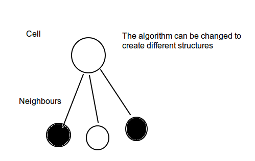

The Game of Life, also known simply as Life, is a cellular automaton devised by the British mathematician John Horton Conway in 1970. The "game" is a zero-player game, meaning that its evolution is determined by its initial state, requiring no further input. One interacts with the Game of Life by creating an initial configuration and observing how it evolves.
The following implementation is board-agnostic. It means that cells are not expected to be in a bidimensional array. Cells are related to other cells with a "neighbour" relationship that can be used to generate bidimensional or tridimensional relationships.

This provides the ability to use this code to generate WebGL simulations of the Conway's Game of Life, wich is one of the purposes of this experiment.
This code has been tested with mocha and chai, but it may suffer further variation.
Actually it has a function to create the relationship for the NxN grid pattern. Generating the classic output that is used on the Canvas demo.
The next I want to develop is the algorithm to create grids in a better way and 3D spheres or 3D cubes.
Other things to take into consideration for further development are the memoization of the "step" function and making the code really functional. At this momment the state of the cells is really "changing" and functional programming says that the state must not change, it has to create new clones of the actual state of the application.
That would allow to store the "states" in a list and create "time machine" functionality. Also this would allow to detect repeating patterns.
The core library is tested with mocha & chai (which is included in the package.json)
npm install -g mocha
npm install
mocha test.js -R spec
The code for the Canvas demo is generated with browserify
npm install -g browserify
browserify experiments/canvas/app.js > experiments/canvas/bundle.js